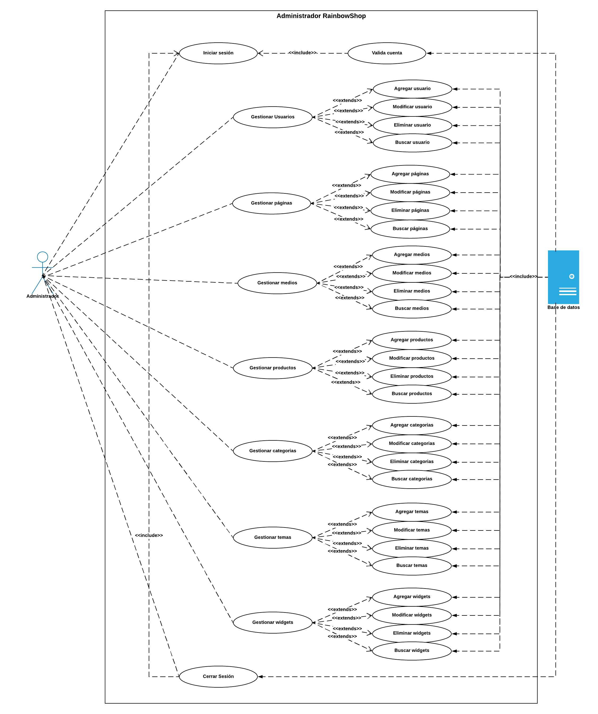
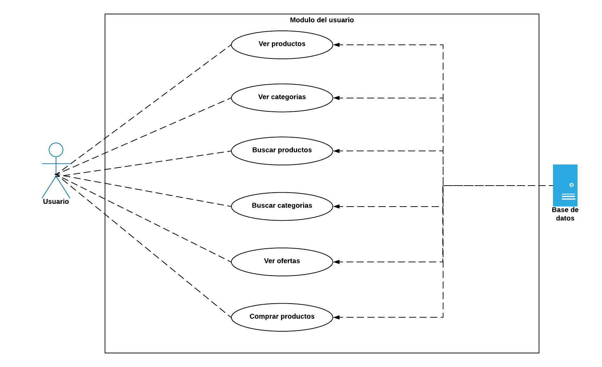

Objetivos
Generación de contenido de calidad constante para aumentar el número de visitas y la duración en nuestro sitio web, así como identificar la llegada de nuevos clientes para tratar de acceder a ellos, fidelizarlos, y captarlos de la competencia. Tratar de expandir nuestras áreas e investigar los mercados. También mejorar-reforzar la imagen de la empresa dándole mas notoriedad, relevancia y visibilidad en la red. Personalizar la comunicación, reducir costes de comunicación, mejorar el contacto con distribuidores, fomentar la interactividad y la viralidad del negocio. Promocionar productos, presentarles nuevos productos a los clientes constantemente, así como lanzar nuevas ofertas y deshacerse de los stocks.
Antecedentes de la empresa
RainbowShop es una de las mejores empresas de tecnología en e-commerce del país. Esta enfocada a la venta de productos de electrónica de alta calidad. Fundada por la ingeniera María Fernanda Baez Zapata en octubre del 2019. Han pasado en unos meses de ser una empresa de venta en línea local a nacional después de que la fundadora se pasara durante años ingeniando una manera de llegar a más clientes dándoles un servicio que ninguna otra tienda de venta en línea les ofrezca.
El objetivo siempre fue mantener la calidad en sus productos y estar siempre de lado del cliente, ya que ellos son los que nos permitirán permanecer en el mercado. Para lograr una gran visión, la empresa se compromete a proporcionar el mejor servicio al cliente, además de trabajar con fabricantes locales que orientan a detalle una promoción ecológica.
Los valores y principios de la empresa RainbowShop están enfocados en brindarle a los clientes productos de alta calidad y a conciencia.
Descripción del entorno
El e-commerce (comercio electrónico) está creciendo con cifras de dos dígitos a nivel mundial. Y cada día somos más los compradores online.
En México, el crecimiento fue de 28,3% en el periodo del 2016 al 2017, con una cifra de negocio de más de 17 mil millones de dólares, siendo la previsión para este 2018 una cifra notablemente superior.
Las ventas del comercio electrónico en América Latina superan los 57,000 millones de dólares, en donde Brasil y México se ubican entre los 15 países con más ventas, con 19,722.5 y 17,629.6 millones de dólares, respectivamente.
Con estos datos en la mano, el canal digital se erige como imprescindible para muchas empresas, que por su actividad económica el canal online representa una oportunidad de crecer a nivel nacional y en muchos casos, a nivel internacional.
Analisis del producto y su mercado
RainbowShop es una tienda en linea nueva en el area del e-commerce, por lo que aun no se encuentra muy popular en el mercado, sin embargo su crecimiento a incrementado considerablemente a medida de como avanza el tiempo. Se busca vender productos de alta calidad para nuestros clientes y que los productos que ofrecemos puedan satisfacer las necesidades de aquellos que dia a dia entran a la red en busca de diferentes tipos de productos. Nuestra empresa esta enfocada a la venta de productos orientados a la tecnologia y a la electronica, y tratamos siempre de estar en constante actualizacion con los productos. Los precios que se manejan son los que se encuentran en el mercado, a diferencia que RainbowShop ofrece ofertas dia a dia, haciendola una de las mejores opciones para poder comprar en linea. Las categorias que se manejan en nuestra empresa son las siguientes:
Electronica
Deportes
Computadoras
Productos Apple
Celulares
Videojuegos
Accesorios
Accesorios
Actualmente el mercado de e-commerce se encuentra con más de 22 millones de usuarios de Internet y una población mucho menor que Colombia y Argentina; las ventas en Perú están muy cercanas a la de estos países, demostrando una participación activa y optimista en el sector. No tan solo en estos paises si no tambien en Mexico.
La comptencia en el mercado se encuentra muy abastecida, ya que como se estuvo mencionando, el e-commerce se a vuelto muy popular en los ultimos años, algunas de las marcas que hacen competencia son las siguientes:
Estrategia de mercadotecnia
RainbowShop ofrece varias técnicas para atraer a diferentes tipos de clientes de todas las edades, al ofrecer productos relacionados con las tecnologias, RainbowShop esta tratando de abarcar a clientes de entre 15 y 35 años, por lo que algunas de las estrategias de mercadotecnia que se usan es promocion mediante redes sociales, ya que son el canal mas usado por los usuarios de esas edades. Tambien se opto por ofrecer descuentos de hasta el 50% a todos y cada uno de los productos con los que se cuenta, sin excepciones. Ademas de ofrecer productos de alta calidad y los mas actualizados en el mercado.
A continuación se mostrara el analisis FODA de la empresa RainbowShop:
- Fortalezas: Ofrece productos de alta calidad a cualquier hora del dia y cada uno de sus productos cuentan con descuentos en todo momento.
- Oportunidades: Al ser nueva en el mercado tiene la oportunidad de observar el mercado y las competencias actuales, para poder formar estrategias de venta
- Debilidades: Ofrecer productos de una sola gama, la cual es orientados a las tecnologias, por lo que varios clientes pueden encontrar en otro lugar sus productos y evitarse buscar entre nuestros productos.
- Amenazas: El mercado cuenta con mucha competencia, los cuales ya cuentan con muchos clientes que les son fieles, en cambio una nueva empresa de e-commerce no les puede llamar tanto la atencion para cambiarse.
Plan de ventas
RainbowShop es una empresa que se dedica a la venta por e-commerce.Cuenta con una serie de caracteristicas que lograran llevar a esta empresa a una de las mejores en el mercado. Los proveedores con los que cuenta cumplen 100% con su objetivo, los cuales son siempre estar preocupados por la calidad de sus producciones, abiertos a la incorporacion de nuevas tecnologias y trabajar siempre con herramientas de primer nivel, poseen buena capacitacion para sus empleados asi como los conocimientos necesarios para llevar bien a cabo las tareas. La buena relacion que lleve la empresa con sus proveedores, es la clave para poder ofrecer productos de buena calidad hacia los clientes.
Por otra parte tenemos lo que son los descuentos a los clientes, ya que cada producto contara con un descuento en cualquiera de sus compras, no importa el numero de productos que vaya a comprar el descuento siempre se respetara.
La empresa aplicara el conocimiento tecnico especializada, es decir una ventaja comparativa con respecto a la competencia para siempre mantenernos en capacitacion y bajo un buen asesoramiento. Tambien es importante el prestigio de las marcas con las que se trabajara, siendo asi la comercializacion de los productos de buena calidad o de calidad conocida, asi como siempre mantenerse en la mejora continua.
La base para siempre mantenerse con buenas ventas, es sintetizar nuestro servicio en cinco puntos:
Buenas relaciones: Se trabajara en generar y mantener relaciones duraderas con nuestros clientes, llamándolos, comunicándonos a través de correo electrónico y la página web, ya que comunicarse con ellos no debe ser tomado como una molestia, si no como una inversion, estando cerca de ellos para poder ayudarlos y saber cuales son sus necesidades para despues satisfacerlas.
Presencia: Mantenerse siempre al tanto de ellos por medio de las redes sociales, publicaciones generadas por los msmos, con el objetivo de estar siempre cerca de nuestros clientes y describir a fondo sus necesidades, si estamos alcanzando sus expectaticas, ver que imagen tienen de nosotros nuestros clientes, y ver si vamos por el camino correcto.
Diferenciarnos del mercado: Lo principal de la relacion con nuestros clientes se debe marcar en la diferencia que logramos hacer mediante nuestras técnicas comerciales para poderles conseguir un producto a un buen precio y de buena calidad. Es importante que nuestros clientes sepan que nuestros procedimientos (métodos de trabajo) son extraídos de reconocidas normas que promueven la excelencia, la mejora continua y la calidad de entrega de cualquier tipo de producto al cliente. El servicio técnico debe considerarse como el producto que nos diferencie, y como una buena herramienta para poder vender otros productos.
Responsabilidad: Debemos destacar que nuestros productos son de marcas reconocidas y de muy buena calidad. Por otra parte la empresa también trabaja en hacer las cosas como corresponden, lo que implica ir cambiando y con ello ir buscando siempre la mejora continua en nuestros procedimientos de trabajo, de manera que podamos entregar un producto de calidad, sin dejar de pensar y proceder continuamente en el cuidado, seguridad y bienestar de nuestros clientes y del medio ambiente.
Plan de operaciones del proyecto
La sede de operaciones de la empresa la situaremos en un pequeño local que
alquilaremos en Ciudad Victoria Tamaulipas. Desde ahí gestionaremos la compra y recepción de los
productos, y la preparación y la distribución de los pedidos de los clientes.
Dado que las operaciones logísticas las realizaremos mediante outsourcing y que nos
enfocamos a un mercado online, la superficie del local alquilado no será muy grande y
el importe a pagar por concepto de alquiler tampoco será muy elevado, ya que es una empresa nueva y por el momento el tamaño del local no es lo que importe por ahora.
La ubicación física es indiferente, puesto que no es fundamental para el desarrollo del
negocio. Con estas características hemos seleccionado un local comercial de planta baja
de edificio distribuido en 5 despachos grandes, un almacén y 2 aseos. Su superficie es de 145 m2
y el alquiler mensual es de 5,000 pesos .
Dicho local se encuentra en Calle Hidalgo, nº 17 entre juarez y venustiano, codigo postal 870000.
Las operaciones que llevaremos a cabo en dicho local serán:
- Recepción: se situará a la entrada del local comercial. Será el lugar donde
atenderemos la llegada de nuestros pedidos a los proveedores, en caso de envío,
y la recogida por nuestro operador logístico de los pedidos realizados por los
clientes. También daremos la opción a los clientes de visitar nuestra oficina para
ser atendidos personalmente sobre cuestiones relacionados a nuestros productos
y nuestra empresa.
- Servicio de atención al cliente y gestiones administrativas: se situará en uno de
los despachos en los que se divide el local. Será el lugar desde donde se lleven a
cabo las gestiones relacionadas a solucionar las dudas y los problemas
planteados por clientes a través de correo electrónico y teléfono. Este servicio,
cubrirá la atención al cliente tanto antes de la venta como después. Es decir,
también dispondremos de un servicio post venta para dar una mejor atención al
cliente ya que la satisfacción del cliente es lo más importante para nosotros.
También será el lugar desde el cual se realizarán las cuestiones relacionadas con
los pedidos a los proveedores, la contabilidad de la empresa y las bases de datos
de los clientes, facturas, etc.
- Estudio de diseño y marketing online: situado en otro de los despachos de los
que dispone el local, estará equipado de los materiales necesarios para poder planear estrategias para
las ventas del negocio. También será el lugar en el que se lleven a cabo
las tareas de mantenimiento y la actualización de la página web, entre otras. El
motivo es que nuestra empresa se basa fundamentalmente en una página online,
y por ello debemos poner especial atención a esta tarea.
- Almacén: se ubicará en un espacio amplio diseñado principalmente para ello.
Aquí se almacenarán los productos recibidos y se organizarán de forma eficiente
para que el proceso de preparación de pedidos realizados por clientes se lleve a
cabo lo más rápido posible y con un bajo porcentaje de error.
- Envíos: se situará en uno de los despachos que habilitaremos para esta función.
Todos los pedidos realizados por los clientes se prepararán y se llevarán a este
lugar para su posterior envío a través de la empresa de transporte contratado por
nuestra empresa. De esta manera también disminuiremos el margen de error y el
tiempo de envío para que los clientes reciban los productos lo más rápido
posible.
- Local comercial: Será la instalación donde se establecerá la base de operaciones de la empresa y por
tanto, desde donde se llevará a cabo todo el trabajo. El establecimiento se encuentra en
la ciudad Victoria Tamaulipas y puesto que nos dedicaremos a la venta online principalmente,
no necesitamos que se encuentre en un lugar visible.
El coste estimado para este establecimiento será de 5,000 pesos mensuales, que incluye
los costes indirectos de luz, agua y electricidad. Los de telefonía e Internet no vendrán
incluidos.
- Mobiliario:
Para poner a funcionar dicho local, necesitaremos prepararlo comprando materiales de
oficina y de trabajo. Estos materiales incluyen, mesas y sillas, estanterías y muebles
para estar, etc.
El coste estimado de los materiales que necesitamos para poner en marcha nuestra
empresa es de un poco menos de 7,000 pesos.
- Equipos informáticos: Otros materiales que necesitamos para poner en marcha la empresa son los
equipos informáticos tales como computadoras, impresoras,
servidores y programas para el ordenador.
El coste estimado para estos materiales es de aproximadamente de 40,000 pesos.
- Almacén: Lo habilitaremos con muebles y estanterías para ordenar los productos de forma que sea
más cómodo y fácil encontrarlos en el momento de preparar los pedidos. De esta
manera ahorraremos tiempo y evitaremos equivocaciones.
El coste estimado para dicho cometido es de 10,000 pesos.
En primer lugar diseñar la pagina web en donde nuestros clientes puedan encontrarnos e
interactuar con nosotros. Una vez que tengamos bien desañada la pagina web,
nos pondremos en contacto con nuestros proveedores para ver los productos,
los precios que nos ofrecen y elegir aquellos que sean mas apropiados a nuestros diseños
y a nuestro enfoque. Tambien nos encargaremos de darle funcionalidad a nuestra pagina web
para tambien asegurarnos de poder brindarle un servicio de calidad a nuestros clientes.
Al empezar el proceso de venta de nuestros productos, también será el momento de decidir si realizar ofertas, descuentos,
sorteos etc. Dependiendo de la época del año y de las circunstancias de nuestra empresa.
Una vez realizados los pedidos de nuestros clientes por nuestra página online, los
prepararemos y los trasladaremos del almacén, donde se encuentran desde el momento
en que llegan, a la sala de envíos, donde posteriormente pasará a recogerlos nuestro
operador logístico.
El espacio dedicado al servicio de recepción será el lugar en el que nos pondremos en
contacto y mantendremos relaciones con nuestros proveedores. Será aquí donde
recibamos los productos y las mandemos a almacenar, y será desde aquí desde donde los
enviemos ya que cuando la empresa de transportes contratada llegue, abriremos la sala
de envíos para que se lleven los pedidos. Todas estas entradas y salidas de productos se
registrarán en dicho espacio.
Después de la compra y de la llegada de los pedidos a los clientes, dispondrán de un
servicio de atención al cliente postventa. Se podrán poner en contacto con la empresa a través de correo electrónico o teléfono para consultar dudas y resolver problemas.
Además, para comodidad de los clientes, también daremos la opción de poder visitar
nuestro local comercial para ser atendidos personalmente.
Capital humano
El grupo de personas que forman el negocio, que trabajan para él, es una de las partes
fundamentales y con gran protagonismo en la empresa.
Esta planificación consiste en encontrar los candidatos ideales para abordar las labores
diarias requeridas para el funcionamiento de la empresa. Para ello hay que identificar
los departamentos que van a existir en la empresa para que, a partir de ellos, se puedan
describir las funciones y las actividades que se llevarán a cabo en cada uno, y así definir
la capacitación profesional y los conocimientos técnicos adecuados que deben poseer
los trabajadores para cada puesto.
Dicha planificación es tan necesaria como importante para realizar un proceso de
selección de personal eficiente para nuestra empresa. Se trata de conseguir aquellos
individuos que mejor se adapten y que mejor desarrollen las tareas propias del puesto de
trabajo. Y para ello hay que seleccionar a aquellos que dispongan de los conocimientos,
las capacidades y las aptitudes adecuadas a tal fin.
Con este objetivo determinaremos, para cada departamento, las distintas categorías de
los puestos de trabajo a desempeñar, el número de trabajadores, sus funciones, los
conocimientos que se deben tener para desarrollar dicha actividad, su retribución y
demás información relacionada con cada uno.
Al tratarse de un negocio que está comenzando, la empresa no contará con
muchos recursos humanos. Sin embargo, conforme la empresa vaya creciendo, iremos
incorporando más trabajadores, más funciones y aumentando el plan de recursos
humanos.
La organización funcional de la empresa nos permite agrupar los distintos grupos de
trabajo por funciones y actividades a desarrollar. Cada uno de los diferentes trabajos
supondrá una unidad diferenciada del resto.
A corto plazo, la empresa sólo dispondrá del departamento de administración y atención
al cliente y del departamento de desarrolladores y diseño. A largo plazo, podría aumentar el
número de departamentos añadiendo a los ya existentes, por ejemplo, un departamento
de recursos humanos y un departamento jurídico fiscal, entre otros.
Dicho esto, establecemos el siguiente organigrama empresarial jerárquico de nuestra
empresa:
Aspectos legales
Las políticas legales son las que se encargan de establecer las reglas en el entorno en el
que se desenvuelven las empresas. Dependiendo del sector, las normas y regulaciones
que las empresas deben cumplir difieren.
El Estado interviene en la economía a través de las distintas políticas monetarias y
fiscales. Además establece distintas normas en los diversos mercados como por ejemplo
el laboral y el financiero.
Aplicado a nuestra empresa, la política de emprendedores que más destaca es la fiscal.
Este año el Impuesto de Sociedades baja al 28% frente al 30% en el que se situaba.
Además, las entidades de nueva creación tributarán a un tipo del 15% en el primer
periodo impositivo en que la base imponible resulte positiva y en el siguiente.
También se produce una reducción en las retenciones del IRPF a los autónomos, que
pasa en 2015 del 21 % al 19% y en 2016 al 18%. Además, para quienes obtengan rentas
inferiores a 15.000 euros, el tipo disminuyó el pasado julio del 21% al 15%. El
Impuesto de Sociedades y las cotizaciones a la Seguridad Social también experimentan
una reducción.
Digital ocean
Un droplet no es más que una máquina virtual en la nube con todas las características de un servidor, totalmente escalable de acuerdo a las necesidades del negocio, es decir si tienes un droplet con un disco duro de por ejemplo 10 gb, y por razones de tu negocio tienes que aumentar el espacio de tu disco lo puedes hacer sin ningún problema.
Existen algunas ventajas de usar un droplet, primero está la parte económica ya que los costos de adquisición de un servidor son bastante altos comparado con el pago que se hace mensualmente por tu droplet (servidor virtual en la nube) en Digital Ocean, claro está que dependerá también de las características del droplet contratado.
Otro ventaja que a mi criterio considero importante es que te evitas implementar todo un centro de datos y los costos que esto lleva, te evitas costos de luz, y además que en el caso de tener tu servidor físico propio deberías tener un backup en el caso que el principal de algún fallo.
Al tener un servidor en la nube únicamente te dedicas a administrarlo, ya que el proveedor se encarga del resto.
Como te mencionaba es útil y económico en el caso de que estés iniciando un negocio ya que los costos son bajos.
Lo primero que hay que hacer es crear una cuenta en Digital Ocean que es la empresa que provee este servicio. Despues se tiene que crear una cuenta Una vez creada la cuenta te llegará al correo un enlace de activación, con lo que ya estamos a un paso de iniciar la creación del droplet.
En este paso lo que vamos a configurar es el método de pago, existen 2 métodos con tarjeta de crédito y vía paypal. Una vez llenado todos los campos procedes a guardar. Cabe recalcar que si no configuras el método de pago no podrás crear el droplet
En este paso ya vamos a crear directamente el droplet como tal, para esto te dejo la siguiente imagen.
Ahora vamos a elegir la imagen de la distribución de Linux a instalar yo he elegido la primera opción que es Ubuntu 16.04 de 64 bits, adicionalmente debes elegir el el plan que se ajuste a tus necesidades, para este ejemplo elegí el de $ 5,00 dólares mensuales.
Adicionalmente existen dos opciones más en cuanto a las imágenes para cargar en el nuevo droplet.
Como puedes ver en la imagen superior, la opción del recuadro de color naranja, te da la opción para instalar el sistema operativo junto con alguna aplicación o un paquete de software adicional, por ejemplo Ubuntu 16.04 con WordPress, o un entorno LAMP con Ubuntu 16.04 y así muchas opciones que puedes elegir a tu antojo y circunstancias. Otra opción es la del recuadro de color negro, que son imágenes de algún droplet que tu personalizaste en algún momento y que deseas cargar para la configuración del nuevo droplet.
En este paso se te mostrará el lugar donde está ubicado el centro de datos donde va estar tu servidor y el área física, por lo general aparece por defecto el que está más cercano a ti, de acuerdo a tu ubicación actual.
Finalmente puedes seleccionar una clave SSH de tal manera que la autenticación la hagas usando esta clave, ya que es un método más seguro, pero en esta vez no entraré en esos detalles ya que lo haré en un próximo artículo. Puedes cambiar el nombre del droplet si deseas o dejar el nombre por defecto, finalmente debes darle en crear.
Namecheap
Un dominio de Internet es la identificación de tu negocio, en otras palabras, un nombre de dominio es la “traducción” para el público de una dirección IP. Una dirección IP es un número que identifica, de manera lógica y jerárquica, a una Interfaz en red (elemento de comunicación/conexión) de un dispositivo, ya sea una computadora, tableta, portátil, un smartphone. Entonces en vez de escribir un número largo y confuso para visitar un website o blog, tienes una dirección que es fácilmente comprensible y recordable para una persona. Para registrar tu dominio de internet en namecheap, Lo primero que tendrás que hacer es ir a Namecheap al apartado de dominios. Otra opción es poner en la casilla principal de la Home el dominio que quieres registrar.
Namecheamp verificará la disponibilidad de tu dominio y en caso de que no esté disponible te dará más opciones para registrar.
Comprueba si el dominio que quieres está disponible. Una vez que escojas el que necesitas, haz clic en el botón de compra y se sumará a tu pedido. Con el fin de evitar vencimientos y otras cuotas mencionadas, Namecheap te permite realizar el pago y la renovación automática desde el inicio.
El cuarto paso será crearte una cuenta en la que darás todos tus datos y realizarás así el pago final
El proceso de compra es muy rápido y sencillo. No creo que tardes más de 5 minutos en hacerlo.
WordPress
WordPress es un sistema de gestión de contenidos o CMS enfocado a la creación de cualquier tipo de página web. Para instalar wordpress se deben de seguir los siguientes pasos
1. Descarga WordPress desde la web oficial.
2. Sube el archivo .zip a la carpeta de tu droplet por ssh.
3. Extrae el contenido en la carpeta actual.
4. Crea una base de datos.
5. Ejecuta el instalador desde la url de tu dominio o la url temporal.
6. Completa la instalación y verifica el funcionamiento.
Template Depot
Después de descargar el archivo de instalación de Depot de ThemeForest, extráigalo y, en la carpeta extraída, ubique el archivo depot.zip. Luego, puede instalar el tema de Depot utilizando uno de los dos métodos de instalación siguientes:
1. Carga de WordPress: para la mayoría de los usuarios, este es probablemente el método de instalación más simple. Para instalar el tema de Depot usando este método, sigue estos pasos:
- Ingresa a tu panel de administración de WordPress
- Vaya a Apariencia> Temas> Agregar nuevo> Cargar tema
- Haga clic en Elegir archivo y seleccione depot.zip
- Haga clic en Instalar ahora
2. Carga de FTP: si desea instalar el tema Depot a través de FTP, siga estos pasos:
- Extraiga el archivo depot.zip que localizó anteriormente. Ahora debería ver una carpeta llamada depósito
- Usando un cliente FTP, inicie sesión en el servidor donde está alojado su sitio web de WordPress
- Usando un cliente FTP, navegue al directorio / wp-content / themes / debajo del directorio raíz de su sitio web de WordPress
- Con un cliente FTP, cargue la carpeta de almacén extraída anteriormente en el directorio de temas en su servidor remoto
Una vez que se complete la instalación, su tema Depot estará listo para su uso. Ahora todo lo que necesita hacer es navegar a Apariencia> Temas y activar el tema Depot. Después de hacer esto, debería ver las Opciones de Mikado en la barra de navegación izquierda de su panel de administración de WordPress.
También debería ver una notificación en la parte superior de la pantalla que los complementos necesarios deben instalarse. Instale y active todos los complementos necesarios, ya que son necesarios para que el tema funcione correctamente.
Con el tema de Depot, tiene la opción de comenzar a crear su sitio desde cero o elegir importar uno de los sitios de demostración incluidos para usar como punto de partida y luego modificarlo para que se adapte a sus necesidades. En esta sección explicaremos cómo hacer esto último.
Depot viene con un módulo de importación de un solo clic. Para importar uno de los sitios de demostración incluidos, siga estos pasos:
1. Ingresa a tu panel de administración de WordPress
2. Vaya a Opciones de Mikado> Importar
4. En el menú desplegable Tipo de importación, elige qué tipo de contenido quieres importar:
1. All- importa páginas, contenido, widgets y configuraciones. Recomendamos esto para los usuarios que deseen importar un sitio de demostración exactamente como aparece en nuestra demostración en vivo.
2. Content: solo importa páginas y su contenido. Esta opción se recomienda para los usuarios que deseen ver cómo hemos creado nuestros diseños de página, pero que desean mantener su propia configuración en las Opciones de Mikado.
3. Widgets - solo importa widgets. Esta opción se recomienda para los usuarios que solo deseen rellenar las áreas de widgets del tema con los widgets de la demostración elegida. No se importa ningún otro contenido.
4. Options: importa la configuración solo en Opciones de Mikado. Esta opción se recomienda para los usuarios que deseen obtener el mismo aspecto de su sitio de demostración elegido, pero no desean importar ningún contenido adicional.
5. Si también desea importar archivos multimedia (imágenes, videos, sonidos), asegúrese de configurar la opción Importar archivos adjuntos en "Sí".
6. Haga clic en el botón Importar y espere a que finalice el proceso de importación.
Innovative Ideas
Separated they live in Bookmarksgrove right at the coast of the Semantics
Software
Separated they live in Bookmarksgrove right at the coast of the Semantics
Application
Separated they live in Bookmarksgrove right at the coast of the Semantics
Graphic Design
Separated they live in Bookmarksgrove right at the coast of the Semantics
Software
Separated they live in Bookmarksgrove right at the coast of the Semantics
Application
Separated they live in Bookmarksgrove right at the coast of the Semantics
Una vez que haya instalado Depot, puede comenzar a construir su sitio. En esta sección de la Guía del usuario, explicaremos cómo puede configurar su encabezado, cargar su logotipo, crear su menú, configurar su área de pie de página, personalizar el aspecto general de su sitio web y crear sus primeras páginas.
¿Como usarlo?
Una de las primeras cosas que puede hacer después de instalar y activar su tema de Depot es configurar el área de encabezado. El encabezado contiene el logotipo, el menú, la barra de búsqueda, el icono del área lateral y otros widgets opcionales. Para configurar su encabezado, navegue a Opciones de Mikado> Encabezado desde el panel de administración de WordPress. La configuración que defina aquí será la configuración predeterminada para todas las páginas de su sitio. Si necesita ayuda para comprender mejor alguna de estas opciones, consulte la sección Opciones de Mikado de esta Guía del usuario.
Algunas opciones, como el aspecto del encabezado y el color de fondo, se pueden invalidar página por página desde el backend de una página específica. Para obtener más información sobre cómo funcionan las configuraciones de página locales, consulte la sección Páginas de esta Guía del usuario.
Para agregar su logotipo al encabezado, navegue a Opciones de Mikado> Logotipo desde el panel de administración de WordPress y haga clic en el botón de carga junto al campo Imagen de logotipo - Predeterminado. Después de cargar su imagen y guardar las opciones, debe tener un logotipo visible en su área de encabezado. Para obtener más información sobre los distintos tipos de logotipos que se pueden cargar, consulte la sección Opciones de Mikado de esta Guía del usuario.
Para crear un nuevo menú, vaya a Apariencia> Menús desde el panel de administración de WordPress y haga clic en Crear un nuevo menú. Ingrese un nombre para su nuevo menú y luego haga clic en Crear menú.
Cada página que haya creado se enumerará en la sección a la izquierda denominada Páginas. Simplemente marque las páginas que desea agregar a su menú y haga clic en el botón Agregar al menú. Una vez que haya agregado páginas a su menú, puede hacer clic y arrastrar los elementos del menú para reorganizarlos o anidarlos uno debajo del otro.
En la sección Configuración de menú (que se encuentra debajo de la sección Estructura del menú), marque la casilla junto a Navegación principal y haga clic en Guardar menú. Esto activará el menú que acaba de crear, y ahora debería ver un menú funcional en su encabezado.
¿Como crear paginas?
En esta sección de la Guía del usuario, analizaremos la creación de la página con más detalle, incluidas las distintas plantillas de página disponibles en el tema y todas las opciones específicas de la página. Al crear una nueva página, una de las primeras cosas que probablemente querrá hacer es elegir una plantilla adecuada para su página. Para esto, visite su página desde el backend (o cree una nueva página y vaya a Páginas> Agregar nuevo), y localice la sección Atributos de la página en el lado derecho de la pantalla. Depot viene con una variedad de plantillas de página para elegir:
Seleccione esta plantilla si desea crear una página estándar con su contenido dentro de la cuadrícula
Diagrama de caso de uso

En este caso de uso el principal actor que puede tener acceso a los modulos es todo aquel usuario que este registrado como administrador, por otro lado tenemos la parte del usuario, este no tiene acceso a todas las funcionalidades por las cuales puede pasar el administrador pero tiene funcionalidades diferentes: 
Diagrama entidad-relación
En este caso de uso el principal actor que puede tener acceso a los modulos es todo aquel usuario que este registrado como administrador, por otro lado tenemos la parte del usuario, este no tiene acceso a todas las funcionalidades por las cuales puede pasar el administrador pero tiene funcionalidades diferentes:
Recent Blog

Renovating National Gallery
Separated they live in Bookmarksgrove right at the coast of the Semantics, a large language ocean.

Wordpress for a Beginner
Separated they live in Bookmarksgrove right at the coast of the Semantics, a large language ocean.

Make website from scratch
Separated they live in Bookmarksgrove right at the coast of the Semantics, a large language ocean.